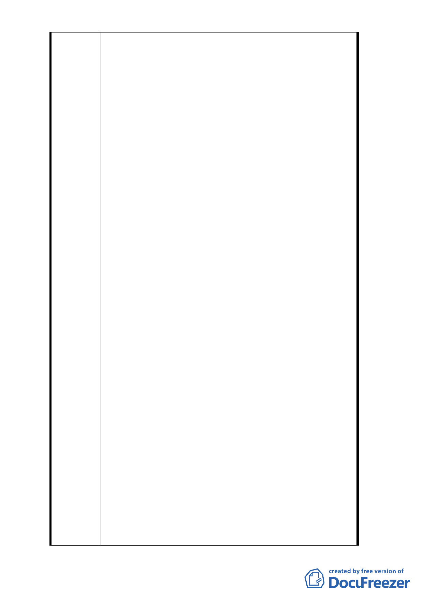

劃定應實施更新之地區自行劃定更新單元建築物及
地區環境評估指標」等規定，向台北市都市更新處
（以下簡稱更新處）提出自行劃定更新單元申請，
並於 98 年 10 月 15 日經更新處北市都新字第 0983
1360800 號函通過指標審查。接續再依規定於 98 年
12 月 28 日以 98 緯字第 112 號函檢送都市更新計畫
至更新處，請提都市計畫委員會審議。惟台北市都
市計畫委員會第 610 次會議又決議：「本案依現行都
市計畫書載名本區應由威京公司整體開發，有關更
新單元劃定暫予保留，請市府釐清本計畫區整體開
發權責單位，以及其開發意願後再行討論。」。此後
，經台北市政府 101 年 2 月 23 日府都新字第
10003943400 號函表示，依 101 年 1 月 4 日召開研商
會議決議：「…在整體開發及主體規定解除前，暫緩
受理民間申請劃定更新單元案，目前已申請劃定之
案件請先教明理由退還申請人。J 因此，退還本案劃
定單元之申請，再次否決本案之改建。
四、 細查都市計畫逕予規定私有土地要交由特定之私人
公司整體開發，其合理性、合法性，以及公平性實
令人高度存疑，憲法第 15 條明訂保障人民之財產權
，都市計畫卻明文私相授受？試問，為何不規定應
由吾等私有地主來整體開發呢？其次，既然都市計
畫載明須整體開發，為何〝京華城〞可以分期單獨
開發？而其第二期卻事隔 20 多年，無聲無息，既然
〝京華城〞可以分期單獨開發，不受該都市計畫之
拘束，為何吾等申請劃定更新單元乙事卻要受到如
此不公平對待？憲法保障人民自由使用、收益、處
分私有財產之權益何在？京華城已經享受了二十幾
年的開發利益，而我們無辜的二期地主只能居住在
窳陋破舊不堪的環境下苦苦生活，今不僅未受其利
，還遭受京都建設公司以無因管理之訴訟對我們主
張數億價金之請求，請問貴府這樣的都市計畫變更
合理、公平嗎？政府借通盤檢討之名義行個案變更
之事實，圖利財團，再以整體開發之實，限制私地
主應有法律保障之財產權使用，造成二期私地主再
次傷害。且都市計畫說明書中並未授權都市設計審
議委員會可以決定分期開發，然貴府逕以都市設計
審議委員會決議為都市計畫實施之依據有濫權之實
，而分期開發又未經全部土地所有權人同意，也未
經都市計畫報核程序，明顯違背都市計畫原則，政
- 64 -